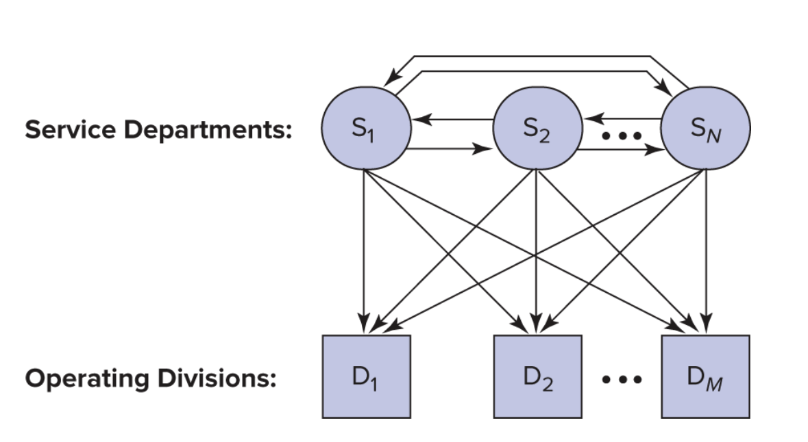
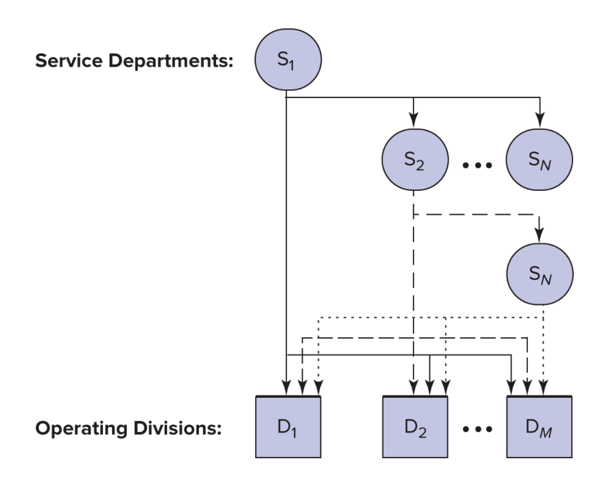

Common costs: arise when it is less expensive to
provide an internal product or service centrally.
Consider: the two divisions of the hard drive
manufacturer (SSD and HHD) share:
building maintenance
grounds
property taxes security
human resources department
Questions:
Should the common costs be allocated to the manufacturing
divisions?
If so, how?
Considerations:
division managers get paid for their division’s accounting
profit
cost allocations act like taxes and affect the managers’ welfare,
and their behavior.
if allocated, managers will seek to reduce costs by improving
processes, cutting corners, or claiming not to need or use the common
resource
if not allocated, managers will seek to maximize use of the common
resources
How should we interpret the status quo?
“Most firms allocate common costs, presumably to prevent
individual divisions from overconsuming the common resource.”
and yet, forcing firms to adopt cost accounting systems improves
their performance, suggesting that some firms may just be using
allocations from financial or tax accounting.
To allocate we need an allocation base:
Choosing an allocation base is one of the most important topics in
all of accounting.
To do it you need to analyze processes, data, and incentives.
This focus on this critical aspect of accounting is missing from
most texts and this course.
In this lecture we will consider the consequences of these
choices.
Insulating and non-insulating allocations
the choice of driver can either insulate the manager’s pay from the
cost or not.
A. Noninsulating method
A noninsulating method uses a driver that varies with the manager’s
performance measures (e.g. div. operating income)
Jan. HDD
Jan. SSD
Jan. HHD
Jan. SSD
Div. Op. Income
$8,000
$8,000
$9,000
$2,000
Allocated costs
(800)
(800)
(900)
(200)
Net income
$7,200
$7,200
$8,100
$1,800
This is a tax on operating income.
B. Insulating method
An insulating allocation uses a driver that does not vary with the
manager’s performance measures (e.g. floorspace).
Jan. HDD
Jan. SSD
Jan. HHD
Jan. SSD
Div. Op. Income
$8,000
$8,000
$9,000
$2,000
Allocated costs
(600)
(400)
(600)
(400)
Net income
$7.400
$7,600
$8,400
$1,600
Allocations in practice
the allocation bases chosen (what to tax) affect the use of
resources inside the firm.
cost allocations also create incentives to cooperate.
cost allocations can distort reported performance
Death spiral
can occur when common costs consist primarily of fixed costs and
users have discretion over their use of the product or service
Steps in the death spiral:
The death spiral occurs when cost allocation reduces utilization of
a common resource (with significant fixed costs).
This creates excess capacity.
This increases the allocation rate for the remaining users
(increasing the ‘tax’ rate), which further reduces utilization.
Death Spiral (not literal) in Corporate Jets
The annual operating cost of a corporate jet ranges between $40 and
$50 million.
Corporate flight departments routinely charge part or all of these
costs to those internal departments using the aircraft.
Allocating operating costs to internal users allows flight
departments to justify the expense of the aircraft to top management, to
apportion operating costs according to usage patterns, and to prevent
overscheduling.
Death Spiral (not literal) in Corporate Jets
Initially, only the direct operating costs (fuel and landing fees)
were charged back to departments using the aircraft, while fixed costs
were not (pilot salaries, maintenance costs, hangar rental, and
insurance).
These costs are all variable, so no danger (figurative)
Death Spiral (not literal) in Corporate Jets
When firms faced downturns in their business, a popular expense
reduction target was to cut corporate jet usage by allocating the fixed
costs along with the direct costs of operating the aircraft.
This makes sense, but not we are allocating fixed costs, and managers
can choose how much to use!
Death Spiral (not literal) in Corporate Jets
Since fixed costs accounted for about 50 percent of the total cost
at full utilization, usage rapidly shrank to the point
where fixed costs rose to 85 percent of the total allocated cost.
What happens when taxes go up?
Death Spiral (not literal) in Corporate Jets
Jet usage dropped further, and each flight hour allocated became
even more costly, sometimes approaching the cost of chartering a
jet.
At this point there is no economy of scale and no reason to produce
the service internally!
Can we avoid this?
When there is excess capacity only allocate the variable cost of the
resource.
Alternatively, some of the fixed costs could be excluded from the
transfer price.
Using practical capacity instead of actual utilization in
calculating the overhead rate.
A caution:
If you are not careful, you might use arithmetic to convince yourself
that adding new products or services may decrease fixed
costs.
No production decision, other than actually changing the fixed costs
themselves, can change fixed costs.
Allocating capacity cost: depreciation
Not allocating some (or all) of the fixed cost can reduce the death
spiral.
For example, allocate only the fixed cost of the capacity actually
being used.
If 40 percent excess capacity exists, allocate only 60 percent of
the depreciation.
However, this solution to the death spiral creates other
concerns.
Allocating capacity cost: depreciation
How much of the existing common resource should each user use?
The current capacity level was chosen for some reason!
If excess capacity exists, any charge discourages its use.
Allocating accounting depreciation to users commits them to
recovering at least the historical cost of the asset.
The trade-off
When allocating depreciation the firm trades off:
the efficient investment in the common resource and
its efficient utilization after acquisition.
On one hand… on the other hand:
Charging depreciation helps control the overinvestment problem, but
at the expense of underutilizing the asset after acquisition.
Most firms charge users for depreciation.
Control is the habit of financial accounting systems
Control of the overinvestment problem tends to dominate
decision-making errors involving asset utilization (the death
spiral).
This is another example of how accounting systems tend to favor
control when confronted with a choice between control and decision
making.
This doesn’t mean that it is the optimal decision.
Getting this right matters!
Cost Allocations at IBM:
During the 1980s and early 1990s, IBM had the policy of allocating
costs from one line of business to another. Managers in those lines of
business constantly argued that some of their overhead should be carried
by other IBM businesses.
Cost Allocations at IBM:
IBM also typically allocated all of the R&D of a new technology
to the line of business first using the technology, and subsequent users
were able to utilize it for free.
Cost Allocations at IBM:
This cost allocation system masked the true profitability of many IBM
businesses for years. IBM claimed it was making money in its PC
business.
Cost Allocations at IBM:
But in 1992, “as IBM began to move away from its funny allocation
system, IBM disclosed that its PC business was unprofitable.” In 2004,
IBM sold its PC division to China-based Lenovo Group for $1.75
billion.
Allocating service department costs
Now that we’re clear on all the things that can go wrong, lets try to
do it!
Allocating service department costs

Usage flows among N service departments
and M production departments.
Example:
Capacity of service departments used:
Telecoms
IT
Cars
Trucks
Total
Telecoms
10%
20%
40%
30%
100%
IT
25%
15%
35%
25%
100%
Service department costs:
Cost
Telecoms
2,000,000
IT
6,000,000
Total
8,000,000
Direct method
Service dept actual usage allocation:
Cars
Trucks
Tot Alloc
Tot Incur
Tot Unalc
Telecoms
$O.8
$0.6
$1.4
$2.0
$0.6
(40% × $2)
(30% × $2)
IT
$2.1
$1.5
$3.6
$6.0
$2.4
(35% × $6)
(25% × $6)
Total
$5.0
$8.0
$3.0
Direct allocation method:
Cars
Trucks
Total
Revised Shares, Direct Allocation Method Telecommunications
40%/(40% + 30%) = 4/7
30%/(40% + 30%) = 3/7
100%
IT
35%/(35% + 25%) = 7/12
25%/(35% + 25%) = 5/12
100%
Allocated Costs, Direct Allocation Method Telecommunications
417 × $2 = $1.143
317 × $2 = $0.857
$2
IT
7/12 × $6 = $3.500
5/12 × $6 = $2.500
$6
Total
$4.643
$3.357
$8
Good news, Bad news
Good news: everything is allocated
Bad news: this is not a good estimated of
opportunity cost per unit of service
What we know:
While we do not know the correct opportunity cost, we do know that
the direct allocation method excludes the service departments’ use of
other service departments and therefore incorrectly states the
opportunity cost of each service department.
Step-down method

The step-down method
Step-down shares (start w/ Tele)
IT
Cars
Trucks
Total
Telecoms
20%/(20% + 40% + 30%) = 2/9
40%/90% = 4/9
30%/90% = 1/3
100%
IT
–
35%/60% = 7/12
25%/60% = 5/12
100%
Step-down allocations
Costs to Allocate
IT
Cars
Trucks
Total Alloc.
Telecoms
$2
2/9 × $2 = $0.444
4/9 × $2 = $0.889
1/3 × $2 = $0.667
$1.556
IT
$6 + $0.444
–
7/12 × $6.444 = $3.759
5/12 × $6.444 = $2.685
$6.444
Total
$4.648
$3.352
$8.000
Does the order matter?
It may! In this case the difference in magnitudes is relatively
minor.
Step-down shares (start w/ IT)
Telecoms
Cars
Trucks
Total
IT
25%+/(25% + 35% + 25%) = 5/17
35%/85% = 7/17
25%/85% = 5/17
100%
Telecoms
–
4/7
3/7
100%
Step-down allocations
Costs to Allocate
IT
Cars
Trucks
Total Alloc.
IT
$6
5/17 × $6 = $1.765
7/17 × $6 = $2.470
5/17 × $6 = $ 1.765
$4.235
Telecoms
$2 + $1.765
–
4/7 × $3.765 = $ 2.151
317 × $3.765 = $ 1.614
3.765
Total
$4.6210
$3.379
$8.000
Does the order matter?
Does the order matter?
Does the order matter?
The costs allocated to Cars and Trucks differ by only $27,000
depending on whether telecommunications or IT is chosen first.
The difference of $27,000 is less than 1 percent of the total costs
allocated.
Does the order matter?
However, very different incentives result depending on which method
is used.
Allocated costs are taxes, and taxes effect behavior.
And these can lead to the Death Spiral if the tax
is too high!
Illustration:
To illustrate lets expand the telecommunications and IT
example.
Suppose the allocation base in telecommunications is the number of
telephones in each department, and
in IT the allocation base is the number of gigabytes of disk space
used.
Illustration:
Transfer prices are to be established for telephones and
gigabytes.
Allocated costs will be used to compute the transfer prices.
The allocation bases:
Allocation base
Telecomm
3,000 Telephones
IT
12 million gigabytes
Cost allocated per phone
Number of phones
Direct
Step, Telecomm first
Step, IT first
Telecoms
–
–
–
IT
–
20% × 3.000 = 600
–
Cars
40% × 3.000 = 1.200
40% × 3.000 = 1.200
40% × 3.000 = 1.200
Trucks
30% × 3.000 = 900
30% × 3.000 = 900
30% × 3.000 = 900
Phones
2,100
2.700
2,100
Cost allocated per phone
Direct
Step, Telecomm first
Step, IT first
Cost per phone
$2M/2.100 = $ 952
$2M/2.700 = $ 741
$3.765M/2.100 = $1.793
Number of phones: Cars
1,200
1,200
1,200
Telecoms charged to Cars
$1.143
$0.889
$ 2.151
Does the order matter?
The order can lead to large changes in the ‘tax’ on the allocation
base!
Cost allocated per Gigabyte of Storage
Number of Gigabytes of
Storage
Direct
Step, Telecomm first
Step, IT first
Telecoms
–
–
25% × 12 = 3.0
IT
–
–
–
Cars
35% × 12 = 4.2
35% × 12 = 4.2
35% × 12 = 4.2
Trucks
25% × 12 = 3.0
25% × 12 = 3.0
25% × 12 = 3.0
Gigs
7.2
7.2
10.2
Cost
allocated per Giga of storage (Millions except cost per Gb)
Consider the impact on behavior:
The sequence of service departments in the step-down method changes
the costs of each service.
Because the cost per phone (which represents the transfer price)
varies depending whether or not it includes IT costs,
the cost allocation scheme affects the decision of each department
to add or drop phones.
The same conclusions hold for the information technology
department.
Does the order matter?
Note the wide variation in cost per gigabyte.
The cost varies from $0.588 per gigabyte under the step-down method
with IT chosen first
to $0.895 under the step-down method with telecommunications chosen
first.
The central issues with the step-down method:
The sequence used is arbitrary and large differences can result in
the cost per unit of service using different sequences.
Also, the step-down method ignores the fact that although
departments earlier in the sequence use service departments later in the
sequence, earlier departments are not allocated these costs.
Get this wrong and risk the death spiral.
Step-Down Allocations and Medicare
Step-Down Allocations and Medicare
The U.S. Medicare system requires each hospital to file a Medicare
Cost Report to get reimbursed for providing health care to Medicare
patients.
To file this report, all cost centers in the hospital
(administration, finance, human resources) that supply services to other
cost centers and major functional services, such as the emergency
department, surgery, and maternity, are ordered in a step-down
sequence.
Step-Down Allocations and Medicare
Each cost center allocates its cost using an allocation base.
For example, nursing administration costs might be allocated using
nursing hours or nursing salaries in each functional service.
Step-Down Allocations and Medicare
The Medicare Cost Report defines the order of the cost centers to be
used in the step-down method but allows each hospital some
discretion.
For example, administration and general costs are usually allocated
last. -However, some hospitals move it up in the list.
Step-Down Allocations and Medicare
The step-down method allocates the cost of each service center, as
well as the costs stepped down to it, to the major functional
services.
Many hospitals use the data generated by the Medicare Cost Report to
set prices and to negotiate third-party contracts.
Note that the Medicare system is one of the few parts of the
US health system that actually works!
SOURCE: M. Muse and B. Amoia, “Step Up to the Step-Down Method,”
Healthcare Financial Management, May 2006.